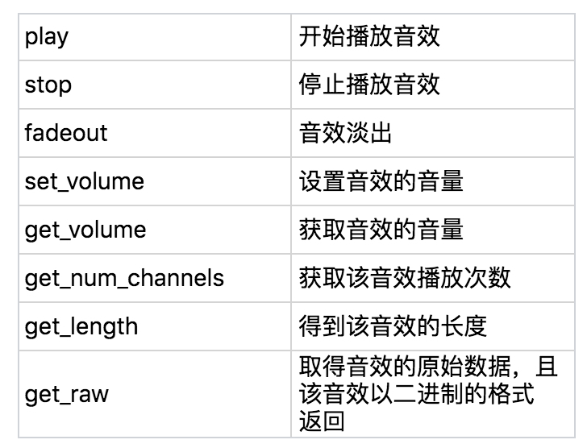
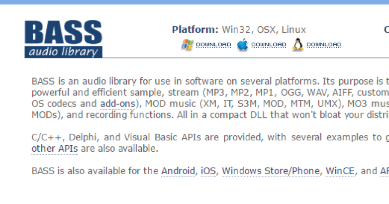

- 00 开篇词 跟我学，你也可以开发一款游戏！.md.html
- 复习课 带你梳理客户端开发的三个重点.md.html
- 第10讲 如何载入“飞机”和“敌人”？.md.html
- 第11讲 如何设置图像的前后遮挡？.md.html
- 第12讲 如何设置精灵的变形、放大和缩小？.md.html
- 第13讲 如何设置淡入淡出和碰撞检测？.md.html
- 第14讲 如何制作游戏资源包和保存机制？.md.html
- 第15讲 如何载入背景音乐和音效？.md.html
- 第16讲 如何在游戏中载入UI和菜单？.md.html
- 第17讲 如何用鼠标和键盘来操作游戏？.md.html
- 第18讲 如何判断客户端的网络连接？.md.html
- 第19讲 如何嵌入脚本语言？.md.html
- 第1讲 游戏开发需要了解哪些背景知识？.md.html
- 第20讲 脚本语言在游戏开发中有哪些应用？.md.html
- 第21讲 如何使用脚本语言编写周边工具？.md.html
- 第22讲 如何选择合适的开发语言？.md.html
- 第23讲 如何定制合适的开发协议？.md.html
- 第24讲 不可忽视的多线程及并发问题.md.html
- 第25讲 如何判断心跳包是否离线？.md.html
- 第26讲 如何用网关服务器进行负载均衡？.md.html
- 第27讲 如何制作游戏内容保存和缓存处理？.md.html
- 第28讲 热点剖析（一）：HTML5技术是如何取代Flash的？.md.html
- 第29讲 热点剖析（二）：如何选择一款HTML5引擎？.md.html
- 第2讲 2D游戏和3D游戏有什么区别？.md.html
- 第30讲 热点剖析（三）：试试看，你也可以编写一款HTML5小游戏！.md.html
- 第31讲 热点剖析（四）：安卓端和苹果端游戏开发有什么区别？.md.html
- 第32讲 热点剖析（五）：如何选择移动端的游戏引擎？.md.html
- 第33讲 热点剖析（六）：AR和人工智能在游戏领域有哪些应用？.md.html
- 第34讲 热点剖析（七）：谈谈微信小游戏的成功点.md.html
- 第35讲 热点剖析（八）：谈谈移动游戏的未来发展.md.html
- 第36讲 热点剖析（九）：谈谈独立开发者的未来发展.md.html
- 第3讲 游戏的发动机：游戏引擎.md.html
- 第4讲 底层绘图接口的妙用.md.html
- 第5讲 构建游戏场景的武器：地图编辑器.md.html
- 第6讲 从0开始整理开发流程.md.html
- 第7讲 如何建立一个Windows窗体？.md.html
- 第8讲 如何区分图形和图像？.md.html
- 第9讲 如何绘制游戏背景？.md.html
- 结束语 做游戏的过程就像是在雕琢一件艺术品.md.html
- 课后阅读 游戏开发工程师学习路径（上）.md.html
- 课后阅读 游戏开发工程师学习路径（下）.md.html
- 捐赠
第15讲 如何载入背景音乐和音效？
好的音乐总是伴随着游戏一起，一直被玩家所记忆。在游戏中播放音乐和音效并不是什么困难的事情，但是究竟什么时候播放什么音效，具体怎么实现，这恐怕就需要一些技巧了。比如，我今天要讲的，我们可以和某些函数捆绑在一起实现。
Pygame支持mp3、ogg、wav音频和音效的播放。音乐的模块都在pygame.mixer中，这里面包括音乐和音效。
我们在使用音频部分模块的时候，需要先初始化一次。
pygame.mixer.init()
这个初始化应该在pygame.init()的初始化之后。
我们来看一下具体的函数，这些函数，存在在pygame.mixer.Sound模块下。

我们再来看一下Pygame.mixer.music音乐模块。我们可以尝试一下载入音频并且播放。
pygame.mixer.music.load('bgm.mp3')
pygame.mixer.music.set_volume(0.5)
pygame.mixer.music.play()
s1 = pygame.mixer.Sound('a.wav')
s1.set_volume(0.5)
s2 = pygame.mixer.Sound('b.wav')
s2.set_volume(0.5)
我来解释一下这段代码。
刚开始，我们载入了一个名叫bgm的mp3文件，告诉程序需要载入这个文件，然后调整音量到0.5，随后就是play，也就是播放，播放是在程序的后台播放，然后程序会接着跑到下面的代码行。
随后，我们使用Sound模块，Sound模块初始化会载入a.wav，然后返回一个对象，这个对象设置音量为0.5，随后再初始化一次，载入b.wav，然后设置音量为0.5。
到这里为止，我们已经将所有的初始化、设置都在游戏的循环外做好了。
随后，我们需要结合前几节的内容，在循环里面，对飞机碰撞进行声音的操作，比如出现爆炸声的时候，播放什么声音；碰撞结束，播放另一种的声音。
if True == collide(pln, (100,300+y1), enm, (100,20+y2)):
s1.play()
else:
s2.play()
for event in pygame.event.get():
if event.type == QUIT:
pygame.quit()
if event.type == KEYDOWN:
if event.key == K_p:
pygame.mixer.music.pause()
if event.key == K_r:
pygame.mixer.music.unpause()
首先，我们使用collide函数。这在前面几章有过详细的说明。
这是一段检测飞机碰撞的代码，如果飞机碰撞了的话，就会返回True，如果返回True的话，我们就播放s1音频，否则就播放s2音频。当然，这个s2音频可能会一直在播放（因为一直没有碰撞）。
随后就是事件监测，如果检测到K_p，就是按下键盘p，就让音乐停止，使用pause函数；如果按下r键，就恢复播放。
我们在Pygame上的操作已经基本结束了，但是，音频和音效的内容并没有结束。
在游戏编程中，我们需要嵌入音频和音效，特别是在没有Pygame的时候，如果有一些游戏引擎没有提供音频库的话，我们就需要自己使用第三方的音频库。虽然可以使用耳熟能详的ffmpeg，但是感觉有点大材小用了，所以我们需要一个专门的音频库。
在这里，我推荐BASS音频库。你可以去 http://www.un4seen.com 下载开发库。这个音频库是不开源的，如果你只是自己开发游戏玩玩，非商业目的，就可以使用。如果是商业使用，那就需要购买证书。

在这个页面上，我们点击download按钮，就会下载最新版本的开发库。解压缩下来，会出现对应几个语言的开发目录。
其中bass.dll文件是动态链接库，要使用的话，可以在c文件夹下，使用lib库和bass.h进行头文件包含进行编程。
我们来看一下，如何使用C/C++语言加入Bass引擎的代码。
BASS_Init(-1, 44100, 0, hwnd, NULL);
HSTREAM s = BASS_StreamCreateFile(false, "a.mp3", 0, 0, 0);
BASS_ChannelPlay(s, false);
BASS_StreamFree(s)
首先，我们将 BASS 库初始化，初始化的参数是：设备、输出比率、标志位（比如8位音质、立体声、3D等等）、Windows句柄。你也可以输入0。最后一个是clsid，就是用于初始化DirectSound的类的ID，一般会使用NULL。
随后，开始从文件建立一个流，BASS_StreamCreateFile函数，返回一个HSTREAM。HSTREAM其实是一个DWORD类型。
这个函数里的参数，我也解释一下。
第一个参数是内存。如果传入true的话，就将这个流保存在内存中；否则的话，就不保存在内存中。
第二个参数是音频文件名。这个参数和第一个参数会联动。当第一个参数保存在内存中的时候，就填入内存地址，否则就填入文件名。
第三个参数是偏移量，也就是文件从哪里开始播放。当然这个参数只在第一个参数为false，不保存在内存的情况下起作用。
第四个参数是长度，如果填入0，就是所有长度。
最后一个是标志位，填入的是创建模式，比如是循环播放方式，还是软件解码模式等等。
接下来就是开始播放，第一个填入的是刚才返回的流的句柄，第二个参数是是否重新开始播放。最后一个就是播放完后进行回收资源，删除句柄。
float v; DWORD r;
BASS_SetConfig(BASS_CONFIG_GVOL_STREAM, 100);
v = BASS_GetVolume();
v = 200;
BASS_SetVolume(v);
r = BASS_ChannelIsActive(s);
if(r == BASS_ACTIVE_PAUSED)
...
else if(r == BASS_ACTIVE_PLAYING)
...
else if(r == BASS_ACTIVE_STOPPED)
...
else if (r == BASS_ACTIVE_STALLED)
..
接下来就是调整音量以及获取播放的状态功能。
其中BASS_SetConfig中，第一个参数是选项，第二个参数是调整音量的值，BASS_CONFIG_GVOL_STREAM的意义是全局的流的音量。
随后我们就开始取得音量，BASS_GetVolume是获取系统的音量，并不是流的音量，第五行代码就是设置系统音量。
接下来，我们就要获取播放的状态。在BASS_ChannelIsActive的函数内填入流的句柄，随后获取返回值，然后使用返回值进行比较，其中BASS_ACTIVE_PAUSED，就是播放状态暂停，BASS_ACTIVE_PLAYING是正在播放中或者录音状态，BASS_ACTIVE_STOPPED是停止状态，或者流句柄并不是有效的，BASS_ACTIVE_STALLED是停滞状态。
一般的原因是，播放的状态缺少样本数据，流的播放停滞了，如果数据足够播放的话，就会自动恢复。
BASS库还有许许多多的函数和功能，就不在这里过多阐述了。
小结
我来总结一下。今天我们讲解了Pygame中音频和音效的播放。你应该记住这些东西。
在Pygame中，播放音乐是不需要进行多线程控制的。它本身就会在后台进行播放。
所有的音乐和音效都在pygame.mixer模块中，如果载入的是音乐，就使用music模块；如果载入的是音效，就使用Sound模块。
随后我们介绍了BASS音频库。这几乎是最专业的音频库了。由于是C接口，所以通用多种语言，你可以使用.NET或者VB等语言来应用。当然如果要进行后台播放、多个频道播放等功能，你需要编写多线程的代码，并没有Pygame那么轻松，这里面很多事情需要自己去做。
现在给你留一个小问题。
在pygame.mixer.music模块中，如何播放一首音乐后立刻播放另外一首音乐？
欢迎留言说出你的看法。我在下一节的挑战中等你！
© 2019 - 2023 Liangliang Lee. Powered by gin and hexo-theme-book.